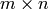
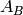
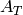
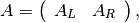
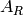
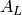
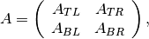
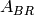
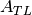

Partitioning¶
The following routines are slight tweaks of the FLAME project’s (as well as PLAPACK’s) approach to submatrix tracking; the difference is that they have “locked” versions, which are meant for creating partitionings where the submatrices cannot be modified.
PartitionUp¶
Given an  matrix A, configure AT and AB to view the local data of A corresponding to the partition

where  is of a specified height.
- void PartitionUp( Matrix<T>& A, Matrix<T>& AT, Matrix<T>& AB, int heightAB=Blocksize() )
- void LockedPartitionUp( const Matrix<T>& A, Matrix<T>& AT, Matrix<T>& AB, int heightAB=Blocksize() )
Templated over the datatype, T, of the serial matrix A.
- void PartitionUp( DistMatrix<T,U,V>& A, DistMatrix<T,U,V>& AT, DistMatrix<T,U,V>& AB, int heightAB=Blocksize() )
- void LockedPartitionUp( const DistMatrix<T,U,V>& A, DistMatrix<T,U,V>& AT, DistMatrix<T,U,V>& AB, int heightAB=Blocksize() )
Templated over the datatype, T, and distribution scheme, (U,V), of the distributed matrix A.
PartitionDown¶
Given an matrix A, configure AT and AB to view the local data of A corresponding to the partition
where  is of a specified height.
- void PartitionDown( Matrix<T>& A, Matrix<T>& AT, Matrix<T>& AB, int heightAT=Blocksize() )
- void LockedPartitionDown( const Matrix<T>& A, Matrix<T>& AT, Matrix<T>& AB, int heightAT=Blocksize() )
Templated over the datatype, T, of the serial matrix A.
- void PartitionDown( DistMatrix<T,U,V>& A, DistMatrix<T,U,V>& AT, DistMatrix<T,U,V>& AB, int heightAT=Blocksize() )
- void LockedPartitionDown( const DistMatrix<T,U,V>& A, DistMatrix<T,U,V>& AT, DistMatrix<T,U,V>& AB, int heightAT=Blocksize() )
Templated over the datatype, T, and distribution scheme, (U,V), of the distributed matrix A.
PartitionLeft¶
Given an matrix A, configure AL and AR to view the local data of A corresponding to the partition

where  is of a specified width.
- void PartitionLeft( Matrix<T>& A, Matrix<T>& AL, Matrix<T>& AR, int widthAR=Blocksize() )
- void LockedPartitionLeft( const Matrix<T>& A, Matrix<T>& AL, Matrix<T>& AR, int widthAR=Blocksize() )
Templated over the datatype, T, of the serial matrix A.
- void PartitionLeft( DistMatrix<T,U,V>& A, DistMatrix<T,U,V>& AL, DistMatrix<T,U,V>& AR, int widthAR=Blocksize() )
- void LockedPartitionLeft( const DistMatrix<T,U,V>& A, DistMatrix<T,U,V>& AL, DistMatrix<T,U,V>& AR, int widthAR=Blocksize() )
Templated over the datatype, T, and the distribution scheme, (U,V), of the distributed matrix A.
PartitionRight¶
Given an matrix A, configure AL and AR to view the local data of A corresponding to the partition
where  is of a specified width.
- void PartitionRight( Matrix<T>& A, Matrix<T>& AL, Matrix<T>& AR, int widthAL=Blocksize() )
- void LockedPartitionRight( const Matrix<T>& A, Matrix<T>& AL, Matrix<T>& AR, int widthAL=Blocksize() )
Templated over the datatype, T, of the serial matrix A.
- void PartitionRight( DistMatrix<T,U,V>& A, DistMatrix<T,U,V>& AL, DistMatrix<T,U,V>& AR, int widthAL=Blocksize() )
- void LockedPartitionRight( const DistMatrix<T,U,V>& A, DistMatrix<T,U,V>& AL, DistMatrix<T,U,V>& AR, int widthAL=Blocksize() )
Templated over the datatype, T, and the distribution scheme, (U,V), of the distributed matrix A.
PartitionUpDiagonal¶
Given an matrix A, configure ATL, ATR, ABL, and ABR to view the local data of A corresponding to the partitioning

where the diagonal of  lies on the main diagonal
(aka, the left diagonal) of  and is of the specified height/width.
and is of the specified height/width.
- void PartitionUpDiagonal( Matrix<T>& A, Matrix<T>& ATL, Matrix<T>& ATR, Matrix<T>& ABL, Matrix<T>& ABR, int diagABR=Blocksize() )
- void LockedPartitionUpDiagonal( const Matrix<T>& A, Matrix<T>& ATL, Matrix<T>& ATR, Matrix<T>& ABL, Matrix<T>& ABR, int diagABR=Blocksize() )
Templated over the datatype, T, of the serial matrix A.
- void PartitionUpDiagonal( DistMatrix<T,U,V>& A, DistMatrix<T,U,V>& ATL, DistMatrix<T,U,V>& ATR, DistMatrix<T,U,V>& ABL, DistMatrix<T,U,V>& ABR, int diagABR=Blocksize() )
- void LockedPartitionUpDiagonal( const DistMatrix<T,U,V>& A, DistMatrix<T,U,V>& ATL, DistMatrix<T,U,V>& ATR, DistMatrix<T,U,V>& ABL, DistMatrix<T,U,V>& ABR, int diagABR=Blocksize() )
Templated over the datatype, T, and the distribution scheme, (U,V), of the distributed matrix A.
PartitionUpLeftDiagonal¶
Same as PartitionUpDiagonal.
- void PartitionUpLeftDiagonal( Matrix<T>& A, Matrix<T>& ATL, Matrix<T>& ATR, Matrix<T>& ABL, Matrix<T>& ABR, int diagABR=Blocksize() )
- void LockedPartitionUpLeftDiagonal( const Matrix<T>& A, Matrix<T>& ATL, Matrix<T>& ATR, Matrix<T>& ABL, Matrix<T>& ABR, int diagABR=Blocksize() )
Templated over the datatype, T, of the serial matrix A.
- void PartitionUpLeftDiagonal( DistMatrix<T,U,V>& A, DistMatrix<T,U,V>& ATL, DistMatrix<T,U,V>& ATR, DistMatrix<T,U,V>& ABL, DistMatrix<T,U,V>& ABR, int diagABR=Blocksize() )
- void LockedPartitionUpLeftDiagonal( const DistMatrix<T,U,V>& A, DistMatrix<T,U,V>& ATL, DistMatrix<T,U,V>& ATR, DistMatrix<T,U,V>& ABL, DistMatrix<T,U,V>& ABR, int diagABR=Blocksize() )
Templated over the datatype, T, and the distribution scheme, (U,V), of the distributed matrix A.
PartitionUpRightDiagonal¶
Given an matrix A, configure ATL, ATR, ABL, and ABR to view the local data of A corresponding to the partitioning
where the diagonal of lies on the right diagonal of ,
which is defined to include the bottom-right entry of ; the length
of the diagonal of is specified as a parameter in all of the
following routines.
- void PartitionUpRightDiagonal( Matrix<T>& A, Matrix<T>& ATL, Matrix<T>& ATR, Matrix<T>& ABL, Matrix<T>& ABR, int diagABR=Blocksize() )
- void LockedPartitionUpRightDiagonal( const Matrix<T>& A, Matrix<T>& ATL, Matrix<T>& ATR, Matrix<T>& ABL, Matrix<T>& ABR, int diagABR=Blocksize() )
Templated over the datatype, T, of the serial matrix A.
- void PartitionUpRightDiagonal( DistMatrix<T,U,V>& A, DistMatrix<T,U,V>& ATL, DistMatrix<T,U,V>& ATR, DistMatrix<T,U,V>& ABL, DistMatrix<T,U,V>& ABR, int diagABR=Blocksize() )
- void LockedPartitionUpRightDiagonal( const DistMatrix<T,U,V>& A, DistMatrix<T,U,V>& ATL, DistMatrix<T,U,V>& ATR, DistMatrix<T,U,V>& ABL, DistMatrix<T,U,V>& ABR, int diagABR=Blocksize() )
Templated over the datatype, T, and the distribution scheme, (U,V), of the distributed matrix A.
PartitionDownDiagonal¶
Given an matrix A, configure ATL, ATR, ABL, and ABR to view the local data of corresponding to the partitioning
where the diagonal of  is of the specified length and lies on
the main diagonal (aka, the left diagonal) of .
- void PartitionDownDiagonal( Matrix<T>& A, Matrix<T>& ATL, Matrix<T>& ATR, Matrix<T>& ABL, Matrix<T>& ABR, int diagATL=Blocksize() )
- void LockedPartitionDownDiagonal( const Matrix<T>& A, Matrix<T>& ATL, Matrix<T>& ATR, Matrix<T>& ABL, Matrix<T>& ABR, int diagATL=Blocksize() )
Templated over the datatype, T, of the serial matrix A.
- void PartitionDownDiagonal( DistMatrix<T,U,V>& A, DistMatrix<T,U,V>& ATL, DistMatrix<T,U,V>& ATR, DistMatrix<T,U,V>& ABL, DistMatrix<T,U,V>& ATL, int diagABR=Blocksize() )
- void LockedPartitionDownDiagonal( const DistMatrix<T,U,V>& A, DistMatrix<T,U,V>& ATL, DistMatrix<T,U,V>& ATR, DistMatrix<T,U,V>& ABL, DistMatrix<T,U,V>& ABR, int diagATL=Blocksize() )
Templated over the datatype, T, and the distribution scheme, (U,V), of the distributed matrix A.
PartitionDownLeftDiagonal¶
Same as PartitionDownDiagonal.
- void PartitionDownLeftDiagonal( Matrix<T>& A, Matrix<T>& ATL, Matrix<T>& ATR, Matrix<T>& ABL, Matrix<T>& ABR, int diagATL=Blocksize() )
- void LockedPartitionDownLeftDiagonal( const Matrix<T>& A, Matrix<T>& ATL, Matrix<T>& ATR, Matrix<T>& ABL, Matrix<T>& ABR, int diagATL=Blocksize() )
Templated over the datatype, T, of the serial matrix A.
- void PartitionDownLeftDiagonal( DistMatrix<T,U,V>& A, DistMatrix<T,U,V>& ATL, DistMatrix<T,U,V>& ATR, DistMatrix<T,U,V>& ABL, DistMatrix<T,U,V>& ATL, int diagABR=Blocksize() )
- void LockedPartitionDownLeftDiagonal( const DistMatrix<T,U,V>& A, DistMatrix<T,U,V>& ATL, DistMatrix<T,U,V>& ATR, DistMatrix<T,U,V>& ABL, DistMatrix<T,U,V>& ABR, int diagATL=Blocksize() )
Templated over the datatype, T, and the distribution scheme, (U,V), of the distributed matrix A.
PartitionDownRightDiagonal¶
Given an matrix A, configure ATL, ATR, ABL, and ABR to view the local data corresponding to the partitioning
where the diagonal of is of the specified length and lies on
the right diagonal of , which includes the bottom-right entry of
.
- void PartitionDownLeftDiagonal( Matrix<T>& A, Matrix<T>& ATL, Matrix<T>& ATR, Matrix<T>& ABL, Matrix<T>& ABR, int diagATL=Blocksize() )
- void LockedPartitionDownLeftDiagonal( const Matrix<T>& A, Matrix<T>& ATL, Matrix<T>& ATR, Matrix<T>& ABL, Matrix<T>& ABR, int diagATL=Blocksize() )
Templated over the datatype, T, of the serial matrix A.
- void PartitionDownLeftDiagonal( DistMatrix<T,U,V>& A, DistMatrix<T,U,V>& ATL, DistMatrix<T,U,V>& ATR, DistMatrix<T,U,V>& ABL, DistMatrix<T,U,V>& ATL, int diagABR=Blocksize() )
- void LockedPartitionDownLeftDiagonal( const DistMatrix<T,U,V>& A, DistMatrix<T,U,V>& ATL, DistMatrix<T,U,V>& ATR, DistMatrix<T,U,V>& ABL, DistMatrix<T,U,V>& ABR, int diagATL=Blocksize() )
Templated over the datatype, T, and the distribution scheme, (U,V), of the distributed matrix A.